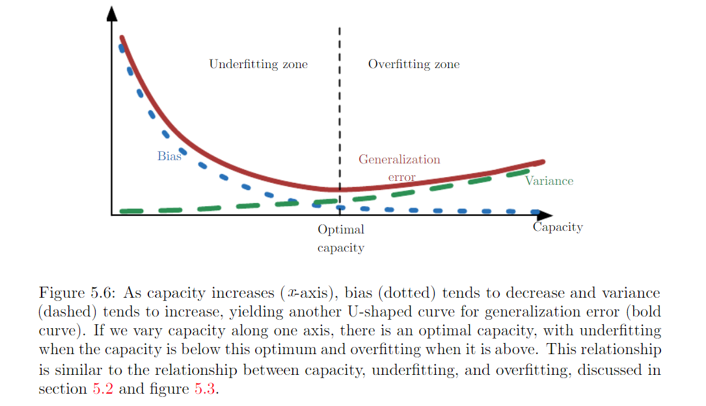

5.4 Estimator, Bias and Variance¶
Pointe estimator¶
Denote a point estimate of a parameter \(\hat{\theta}\). Let \(\{x^{1} ... x^{m}\}\) be a set of m independent and identically distributed data (iid). A point estimator or statistic is any function of the data:
Frequentist perspective on statistics: assume true parameter value :math: theta is fixed but unknown. The point estimate is a function of the data. Since data is drawn from random process, any function of the data is random. Therefore \(\hat{\theta}\) is a random process.
Bias¶
Expectation is over the data. :math: theta is true underlying value used to define the data generating distribution. :math: theta is unbiased when \(bias(\hat{\theta}) = 0\). :math: theta is asymptotically nbiased when \(lim_{m\rightarrow \infty}bias(\hat{\theta}) = 0\)
See all the examples from p121 ~ p124 for Estimation mean, square …
Variance¶
Variance of the estimator:
Standar Error:
The variance provides a measure of how we would expect the estimate we compute from data to vary as we independently resample the dataset from the underlying data-generating process.
The standard error of mean \(SE(\hat{\mu}_m)=\sqrt{Var(\frac{1}{m} \sum_{i} x^i}) = \frac{\sigma}{\sqrt{m}}\) is very useful because we often estimate the generalization error by computing sample mean of the error on the test set. See example of Bernoulli Distribution in P125
Trading off Bias and Variance to Minimizing Mean Error¶
- Bias measures the expected deviation from the true value of the function or parameter.
- Variance provides a measure of teh deviation from the expected estimator value that any particular sampling of the data is likely to cause.
How do we compare a model with large bias and model with large variance? Most common way: use cross-validation. Alternatively, mean square error (MSE):
To prove it, try it from right to left.
When generalization erro (defined in 5.2 in P107, as expected value of error on a new input) is measured by the MSE (where bias and variance are meaningful components of generalization error), increasing capacity tends to increase variance and decrease bais.
